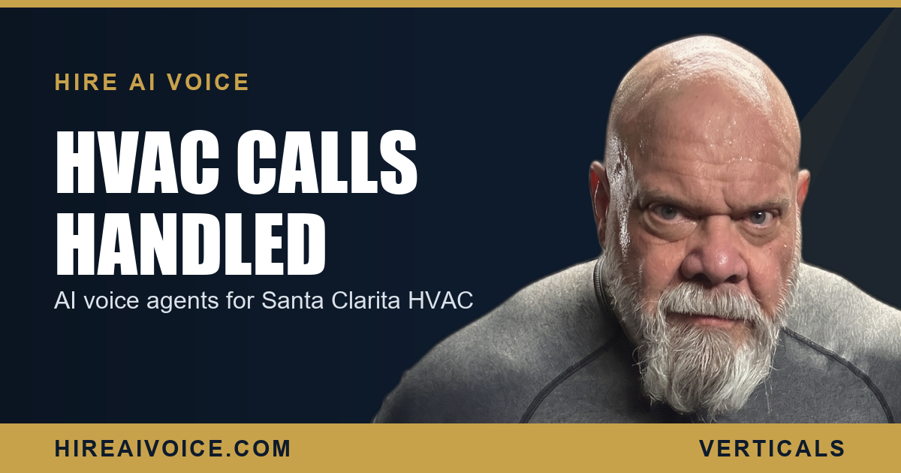

AI Voice Agents for HVAC Companies in Santa Clarita

The Short Version
- When Santa Clarita hits triple digits, your call volume spikes on the exact days your techs are stuck on roofs and in attics with no hand free for the phone.
- Every missed summer call is a homeowner with dead AC who hangs up and dials the next company. That is the most expensive leak in your business.
- An AI voice agent for HVAC answers every call instantly, 24/7, triages emergency versus routine, and books the service on the spot.
- It handles after-hours calls the same as midday, so a 9 PM AC failure becomes a booked job instead of your voicemail.
- Live in 72 hours, $297 or $497 per month, no contracts. Serving Santa Clarita Valley and Los Angeles County.
What Is an AI Voice Agent for HVAC?
An AI voice agent for HVAC is a 24/7 phone answering system that picks up every inbound call the instant it rings, even when your techs are buried in a job and nobody is at the desk. It greets the caller by your company name, listens to the problem, sorts the emergencies from the routine work, and books the service appointment on the spot. No call rolls to voicemail. No homeowner waits.
For an HVAC owner in Santa Clarita, that is not a nice-to-have. The work itself keeps you from the phone. A tech on a roof in the Saugus sun or pulling a coil in a 130-degree attic cannot stop to take a call, and the calls do not wait for a convenient moment. They come in while you are doing the exact work that earns the money.
Why HVAC Companies Lose Calls in the Summer Heat
Because the heat that spikes your call volume is the same heat that has every tech maxed out. When a heat wave parks over the Santa Clarita Valley and it hits 105 in Valencia, dozens of homeowners with dead AC start dialing at the same time. Your crew is already at capacity, the office line is ringing nonstop, and there is simply nobody free to answer.
So the calls roll to voicemail. The homeowner sweating it out with two kids and a dead system does not leave a patient message and wait. They hang up and call the next HVAC company on the list. The job is gone, and you never even knew it existed.
In summer you do not lose the job on price. You lose it on a phone nobody could answer.
Multiply that across a single July week and the leak is staggering. For most HVAC companies, the biggest source of lost revenue is not the ad budget. It is the flood of calls that already came in during a heat wave and got missed because every hand was on a job.
How Does the AI Triage an Emergency Versus Routine Call?
The AI asks a few simple questions and sorts every call by urgency, so your techs go where the emergency actually is instead of treating every call the same. A unit that is completely down during a heat wave, a home with seniors or infants, a no-cool with a baby inside, or a burning smell gets flagged as an emergency and routed for same-day or after-hours dispatch.
A filter swap, a seasonal tune-up, or a homeowner shopping a quote on a new system gets booked cleanly into your normal schedule. The AI captures the address, the unit symptoms, and the urgency, then drops a qualified appointment on your calendar. You walk into the day knowing the AC-down-with-an-infant call in Canyon Country jumped the line and the routine maintenance in Newhall is slotted where it belongs.
That triage is the difference between a chaotic summer where you react to whoever yelled loudest, and a controlled one where your AI receptionist that never sleeps hands you a sorted, prioritized board every morning.
Can It Handle After-Hours HVAC Calls?
Yes, and after-hours is exactly where HVAC bleeds the most. AC does not fail politely at 10 AM on a Tuesday. It dies at 9 PM in July when the house has been baking all day and the family cannot sleep. If that call hits your voicemail, the homeowner is calling the next company before you ever hear the message.
The AI answers nights, weekends, and holidays the same way it answers midday. The homeowner gets a warm, instant conversation and a booked appointment. You decide the rules: which after-hours emergencies fire an immediate text to your on-call tech for same-night dispatch, and which simply get scheduled first thing in the morning. Either way the job is captured instead of lost, and your competitor's phone is still ringing into the void.
What to Do Before the Next Heat Wave
You do not need a bigger marketing budget. You need to stop leaking the calls you already paid to generate. Three moves before the next SCV heat wave hits:
1. Measure the leak. For one busy week, track how many calls you answer live versus how many roll to voicemail. On a 100-degree day the number will shock you, and that gap is your hidden revenue.
2. Put a 24/7 answer in place. An AI voice agent that picks up every call, triages it, and books the service turns your worst summer response times into your best ones, overnight.
3. Set your emergency rules, so a no-cool with a baby inside reaches a tech tonight and a tune-up lands on the calendar.
The HVAC companies winning in Santa Clarita and LA County are not the ones with the flashiest trucks. They are the ones who answer first when the heat hits and everyone else is going to voicemail. Pull that lever before summer does it for you.
Answer Every Call This Summer
Our AI voice agent answers every call 24/7, triages emergencies, books the job, and follows up automatically. Live in 72 hours. $297/month, no contracts. Or call Sarah, our live agent, and hear it yourself.